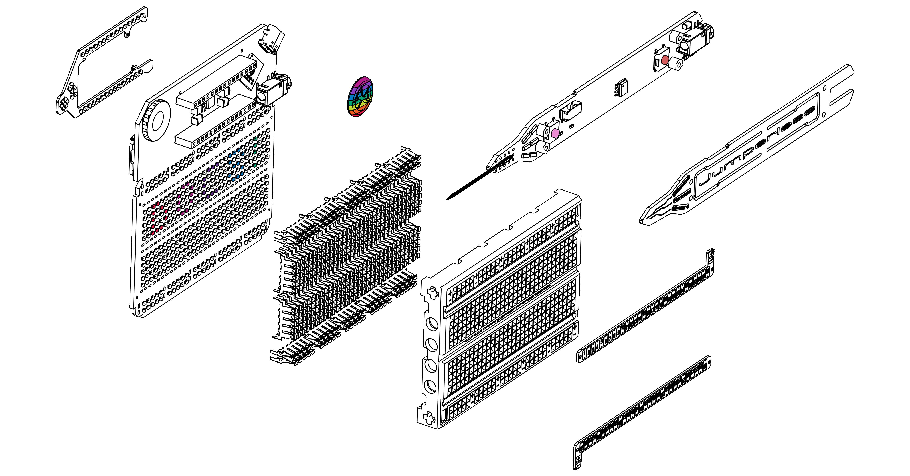

What is it?
Jumperless V5 lets you prototype like a nerdy wizard who can see electricity and conjure jumpers with a magic wand. It’s an Integrated Development Environment (IDE) for hardware, with an analog-by-nature RP2350B-based dev board, a drawer full of wires, and a workbench full of test equipment (including a power supply, a multimeter, an oscilloscope, a function generator, and a logic analyzer) all crammed inside a breadboard.
You can connect any point to any other using software-defined jumpers, so the four individually programmable ±8 V power supplies; ten GPIOs; and seven management channels for voltage, current, and resistance can all be connected anywhere on the breadboard or the Arduino Nano header. RGB LEDs under each hole turn the breadboard itself into a display that provides real-time information about whatever’s happening in your circuit.
These are the docs where you will learn how to use all this stuff

If you don't already have one,
Get a Jumperless V5 on Crowd Supply
Getting Started
Documentation Sections
- Basic Controls - Learn how to use the probe and click wheel
- The App - For talking to your Jumperless
- OLED - Add a better display
- Arduino - The reason for those headers at the top
- Configuration - Persistent settings
- Debugging - Crossbar, bridge, and net list views
- File Manager - Do stuff with the onboard file system
- MicroPython - Use the onboard MicroPython interpreter
- Odds and Ends - Stuff I couldn't think of a good category for
- 3D Printable Stand - Print your own stand
- Writing Native Apps - Dig into the actual firmware and write your own apps
- Glossary - Key terms and definitions
(You should turn off Dark Reader for this site if you have it, it messes up the sidebar colors)
Find Me On The Internet
Join the Discord for pretty much instant answers to your questions